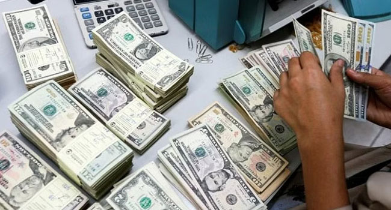

ডলার সঙ্কটে আমদানি ব্যয় মেটাতে হিমশিম খাচ্ছে ব্যাংক
-চাহিদার মাত্র ১০ শতাংশ সরবরাহ করছে কেন্দ্রীয় ব্যাংক
-যথাসময়ে ব্যয় পরিশোধ না করায় গুনতে হচ্ছে জরিমানা
-রিজার্ভ থেকে রেকর্ড ১৩.৩ বিলিয়ন ডলার বিক্রি
বিপিসির জ্বালানি তেল, ফার্নেস ওয়েল, বিদ্যুৎকেন্দ্রের সরঞ্জামাদি, সার, ভোগ্যপণ্যসহ অতিপ্রয়োজনীয় পণ্য আমদানির জন্য এলসি খোলা হয়েছে। কিন্তু ডলার সঙ্কটে এসব পণ্যের দায় পরিশোধ করতে পারছে না ব্যাংকগুলো। তারা প্রতিদিনই কেন্দ্রীয় ব্যাংকের কাছে ডলার চেয়ে চাহিদাপত্র দিচ্ছে। এভাবে গড়ে দিনে দেড় শ’ কোটি ডলার থেকে ১৬০ কোটি ডলারের চাহিদাপত্র ব্যাংকগুলো থেকে কেন্দ্রীয় ব্যাংকের কাছে আসছে। কিন্তু রিজার্ভ বেশি কমে যাওয়ার আশঙ্কায় কেন্দ্রীয় ব্যাংক থেকে ব্যাংকগুলোর চাহিদার সর্বোচ্চ ১০ শতাংশ সরবরাহ করতে পারছে। গত বৃহস্পতিবার ৭ কোটি ১০ লাখ ডলার বিক্রি করা হয়েছে। যেখানে চাহিদা ছিল প্রায় দেড় শ’ কোটি ডলার। বাংলাদেশ ব্যাংকের সংশ্লিষ্ট সূত্র জানিয়েছে, কম করে ডলার বিক্রি করেও চলতি অর্থবছরের গত বৃহস্পতিবার পর্যন্ত বাংলাদেশ ব্যাংক রিজার্ভ থেকে সাড়ে ১১ মাসে ১৩.৩ বিলিয়ন ডলার বিক্রি করেছে সঙ্কটে পড়া ব্যাংকগুলোর কাছে। এ পরিমাণ ডলার এর আগে কখনো কেন্দ্রীয় ব্যাংক তার রিজার্ভ থেকে বিক্রি করতে হয়নি। আর এ কারণে গত বছরে যেখানে সর্বোচ্চ রিজার্ভ ছিল প্রায় ৪৮ বিলিয়ন ডলার, সেখানে গত বৃহস্পতিবার বৈদেশিক মুদ্রার রিজার্ভ ২৯ বিলিয়ন ডলারের ঘরে নেমে এসেছে।
Author name =>
Yeasin

